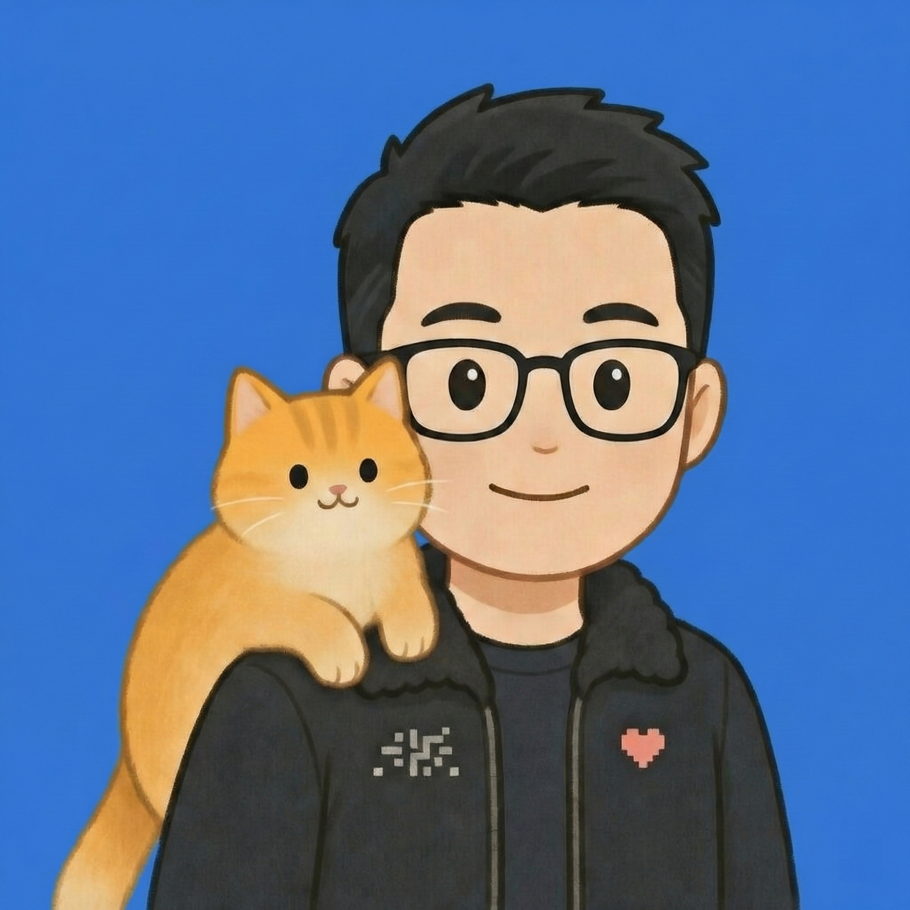

问题明确
确认痛点、业务场景与验收标准。
问题定义 · 实验计划方案可行，是结果。知道什么不行、澄清真实需求、看清 AI 的能力边界，同样是有价值的进展。

确认痛点、业务场景与验收标准。
问题定义 · 实验计划测试关键能力，记录可行路径与限制。
验证记录 · 可行性判断确认功能与价值，形成下一步方案。
演示成果 · 落地条件专题工作坊，围绕已明确的场景展开。
开放式工作坊，一起发现值得验证的问题。
从宣讲与场景讨论开始，建立 AI 认知，发现值得尝试的方向。
集中解决一个具体问题或一项具体技术，完成可复用的 Skill 与操作流程。
依托黑客马拉松，围绕业务场景共创 MVP，完成演示与关键验证。
基于实际业务需求，完成真实产品的设计、验证与落地，形成可推进部署使用的成果。
组合多个工作坊与项目咨询，推动组织持续利用 AI 实现业务价值。
每次工作坊都收集并确认阶段成果。具体目标在开营前共同确定，专题工作坊需提前准备案例与材料。


杰哥发起，行业专家与 AI 专家共同参与。
源于医疗科技，以项目制连接跨行业力量，
通过工作坊与咨询协作，推进验证与落地。

连接真实业务问题、行业专家与 AI 专家，通过工作坊与项目协作，推进实验验证与落地。
新闻学毕业，拥有多年摄影经验，擅长审美与 AI 生图。负责杰哥 AI 实验室运营及 2 天 1 夜 AI 工作坊的组织与推进。
曾任医药商业公司总经理，拥有多年医药领域经验。现为大湾区创业导师，连接行业需求与业务实践。
拥有超过十年的技术背景，熟悉 AI 各项技术及落地应用。参与方案构建、技术验证与实际应用推进。
供应链专业硕士毕业，拥有世界五百强企业管理经验。擅长 AI 应用与解决方案，将业务需求转化为可推进的实践。
念念老师、Lily 老师、老田与罗伯特牛仔的头像待补充。
允许失败，也认真确认每一步。